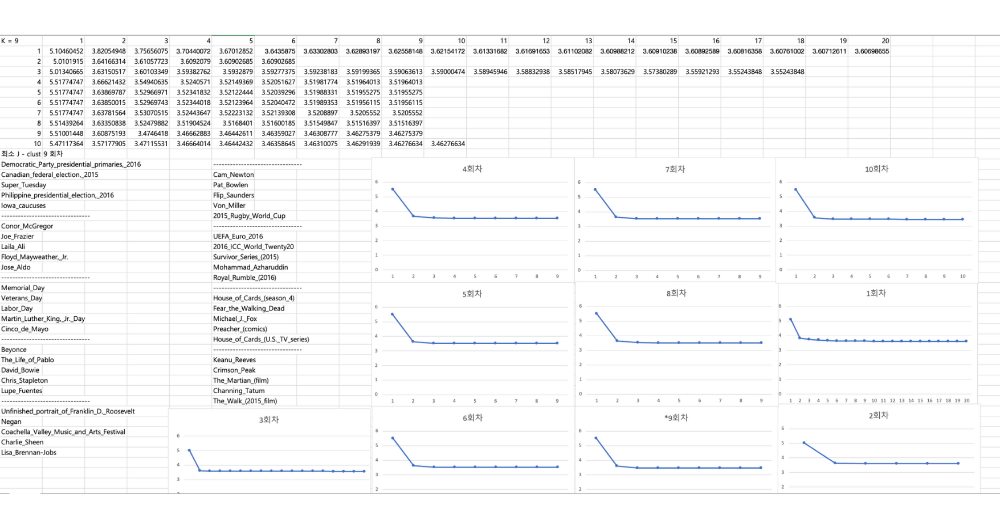
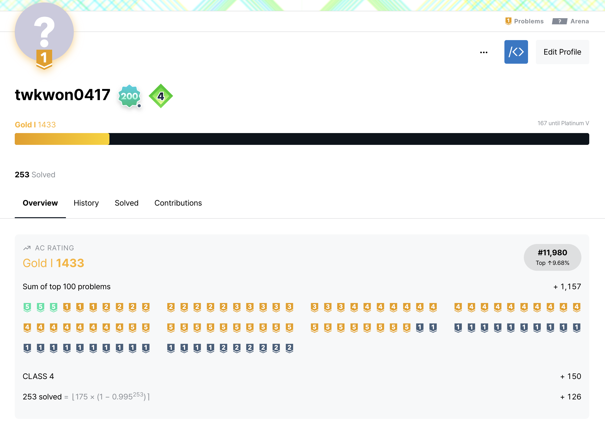
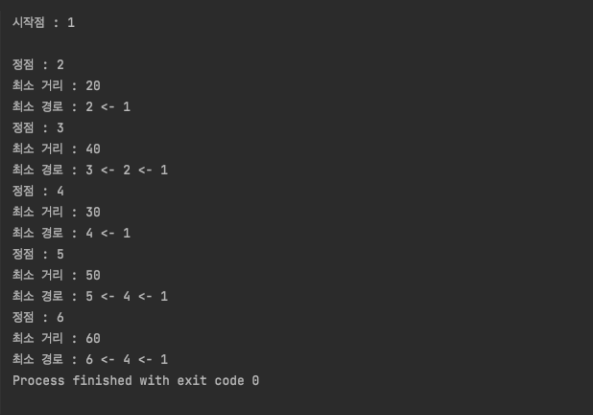
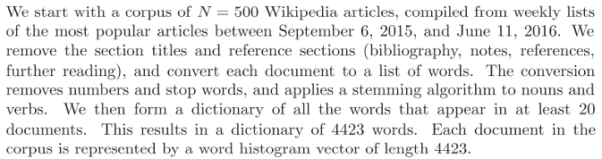

자료구조와 알고리즘 연습
알고리즘 문제해결 사이트인 백준에서 많은 문제들을 풀어 보았습니다.
제한된 메모리와 시간을 맞추기 위해서 공간복잡도, 시간복잡도, Big-O notation에 대해 알게 되었습니다.
선형, 비선형 자료구조에 대해 알게 되었고 다양한 자료구조의 특징들을 배웠다.
Dynamic programming, Binary Search, greedy, backtracking, bruteforce, Floyd Warshall, Dijkstra, bellman ford 알고리즘을 배우고 문제를 풀어 보았습니다.
K - Mean Clustering Algoritm 구현
Introduction to Linear Algebra (Stephen Boyd)의 4.4.2 Topic Discovery에서 쓰인
데이터로 실험 해 보았습니다.

최소 Jclust를 구하려면 많은 시간이 걸림으로 초기값을 다르게 10번 해서 최소인 Jclust를 갖게 한 결과를 출력 하게 하였습니다. 결과를 보니 Clustering이 잘 진행됬음을 볼 수 있었고 머신러닝 중에 Unsupervised Learning을 체험해 볼 수 있었습니다.
이 실험을 계기로 Data Mining이 라는 것을 알게 되었고 흥미가 생겼습니다.
사용 언어 : Java